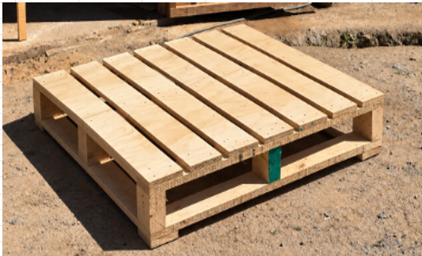

FORMATO AMERICANO (tablas 1 × 3)1.200 × 1.000 mm
9 tablas superiores · 3 yugos
En EMBAPALLETS fabricamos pallets de madera 100 × 120 cm (1.200 × 1.000 mm según orientación), 80 × 120 cm (1.200 × 800 mm) y pallets a medida para almacenamiento, transporte y operaciones logísticas. Estos formatos también se conocen como americano y europeo.
Descuento especial desde 100 unidades

Además, ofrecemos una solución inteligente con nuestros Collares para Pallets. Visítanos en EMBAPLEX.CL →

NUESTROS PRODUCTOS
Venta y fabricación de pallets de madera en formatos 100 × 120, 80 × 120 y a medida. Para empresas de la Región Metropolitana, revisa nuestra venta de pallets en Santiago.
FORMATO AMERICANO
Una solución versátil para operaciones de almacenamiento y transporte. Su formato facilita la manipulación y el movimiento de carga en distintos entornos logísticos.
FORMATO EUROPEO
Formato compacto y ampliamente utilizado en cadenas logísticas. Diseñado para aprovechar eficientemente el espacio durante el almacenamiento y transporte.

SOLUCIÓN PERSONALIZADA
Fabricamos pallets según las dimensiones y condiciones de uso de cada cliente. Una alternativa para cargas, productos o procesos que requieren una solución específica.

SOLUCIÓN INTELIGENTE
Una solución modular que combina un pallet con collares plegables para formar un contenedor adaptable. Facilita el almacenamiento, la protección y el aprovechamiento del espacio.
CUIDADO Y VIDA ÚTIL
Reconocer daños a tiempo ayuda a decidir cuándo retirar un pallet y evaluar su reparación o reemplazo. Revisa la cara superior, la base y sus uniones antes de reutilizarlo.
Busca tablas partidas, deformaciones y clavos sobresalientes. Los zunchos demasiado tensos o mal ubicados pueden deformar la superficie.
Revisa fisuras en los extremos y las fijaciones. Desniveles y ruedas de transpaleta incompatibles pueden dañar la base; evita arrastrar el pallet.
Comprueba que no existan tacos dañados, piezas desplazadas o uniones sueltas. Observa también las entradas de horquillas y evita golpear o empujar el pallet por una esquina.
Opciones de apoyo para tu operación
En nuestros modelos, la configuración inferior depende del diseño. Las tablas de arrastre están en la cara que apoya en el suelo: son distintas de las tablas superiores y de los conjuntos de soporte o zapatos.
La cantidad de tablas por sí sola no determina la capacidad de carga. La elección debe considerar carga, apoyos y equipos de manipulación.
Naranjo: tablas de arrastre
Gris: soportes transversales
Recuadros discontinuos: posición esquemática de tacos.
Vista inferior simplificada, sin escala ni tablas superiores. Ilustra configuraciones; no es un plano constructivo ni evidencia de daños reales.
HSE · Pallet safety, PM15 (PDF): páginas 6–9, daños por manipulación y compatibilidad con equipos; páginas 10–11, inspección de tablas, tacos y fijaciones.
EPAL · Clasificación de calidad y criterios de intercambio (PDF): ejemplos de tablas rotas, tacos faltantes o dañados y otras condiciones de rechazo en su sistema.
Estas referencias describen mecanismos de daño y criterios de revisión, no porcentajes de fallas de EMBAPALLETS. Los criterios EPAL corresponden a su propio sistema y no implican certificación EPAL de nuestros productos.
¿Detectaste una tabla rota, un taco dañado o una unión suelta?
Separa el pallet del uso y solicita una evaluación antes de volver a cargarlo.
USOS
Desde la bodega hasta el despacho, una solución adecuada ayuda a proteger la carga y facilitar su manipulación.
Organización y movimiento de productos en bodegas y centros de distribución.
Soporte para movilizar carga dentro de la cadena logística.
Apoyo a flujos internos y abastecimiento de procesos industriales.
Diseños adaptados a medidas, cargas y condiciones específicas.
GUÍA DE PALLETS
Información práctica sobre medidas, elección, compra, cotización, aplicaciones y reutilización de pallets de madera.
Conoce las principales alternativas y sus diferencias.
Leer artículo →ComparaciónDiferencias entre ambos formatos y qué considerar para elegir.
Leer artículo →SelecciónMedidas, peso, almacenamiento y equipos de manipulación.
Leer artículo →CompraQué revisar al solicitar precios y comparar proveedores.
Leer artículo →SantiagoQué información enviar para una cotización en Santiago y RM.
Leer artículo →SostenibilidadCómo extender la vida útil de los pallets de madera.
Leer artículo →HistoriaEl origen de una pieza esencial para la logística moderna.
Leer artículo →CONTACTO
Indícanos el tipo, cantidad, medidas y uso. Te ayudaremos a evaluar la alternativa apropiada.